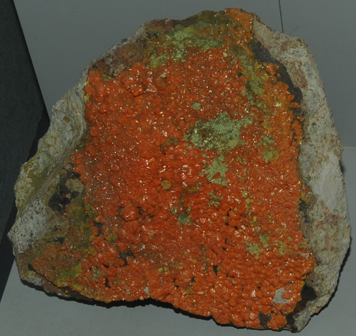

|

| This sample of francevillite is displayed in the Smithsonian Museum of Natural History. Francevillite is a oxide mineral of uranium with vanadium, lead and barium. It has the composition (Ba,Pb)(UO2)2(VO4)2.5H2O. The sample at left is about 12 cm across and is from Mounana, Gabon.
|